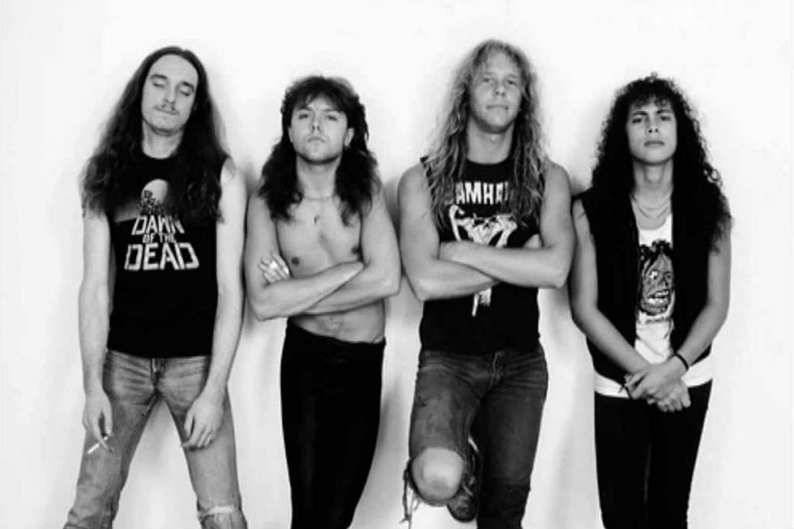
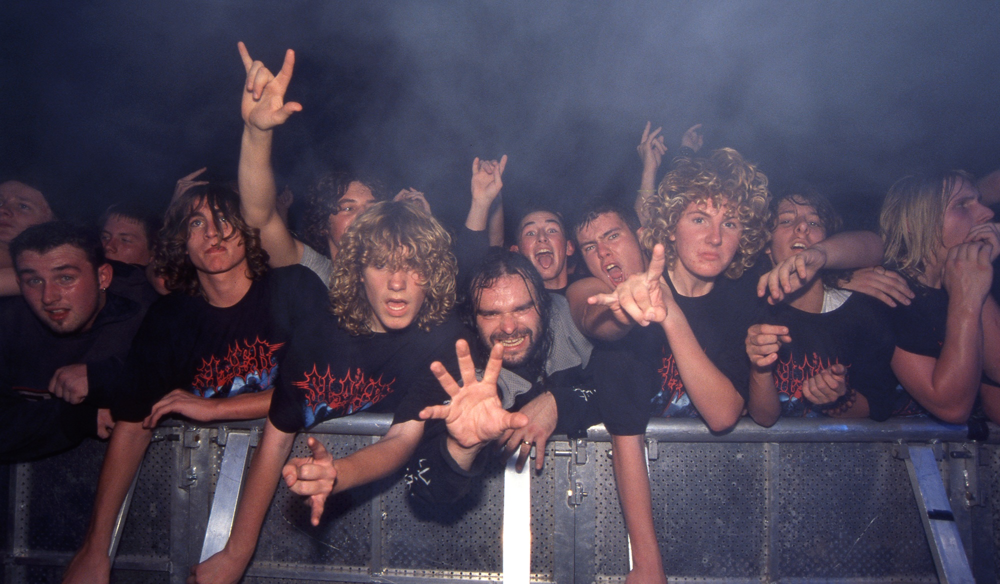

Thrash Metal
Influences
Thrash Metal's 3 Major Influences are Heavy Metal, Hardcore Punk and Speed Metal (Which itself is a unique combination of Heavy Metal and Punk)
The first song that can be historically recognized as "Thrash Metal" would be Queen's 1974 hit, 'Stone Cold Crazy', later covered by Metallica, a seminal band in the genre. 'Stone Cold Crazy' had heavy distortion on the guitars, a blisteringly fast tempo and drumming right out of a punk rock song. It was a lighter version of everything the genre would become, and very different from everything else being released at the time.
Diamond Head's 1980 hit, "Am I Evil?" and other songs of their debut album, were some of the largest influences for defining Thrash Metal acts, such as Metallica, Anthrax and Megadeth, with the afformentioned bands playing the song on the "Big 4 Tour".
The Newcastle upon Tyne based Heavy Metal band, Venom, released an album in 1982 titled "Black Metal". This album can be pointed to as the album that created "Extreme Metal" and would have tremendous impact on Thrash Metal, Death Metal and Black Metal. The album features the dark lyrical themes that would become a staple of every Extreme Metal subgenre.
Description
Thrash Metal is most prominently characterized by it's fast tempos, complex guitar riffs and high register solos. Rhythym guitar parts are typically played in a low register with palm muting. Lead guitar however, usually takes it's riffs into the high register, playing very technically challenging lead lines, almost always utilizing extended "shred" techniques such as sweep picked arpeggios and two hand tapping. Thrash can utilize a myriad of different vocal techniques, from melodic singing, to hardcore influenced shouting to death growls. In a departure from earlier Rock music, Thrash metal bass players took inspiration from Lemmy of Motorhead and began using a heavily distorted bass tone. Pretty much all Thrash Metal songs are based on a minor key, a mode of the minor scale such as Phrygian or Dorian, Harmonic Minor or the straight Chromatic Scale.
Borrowing Heavily from Hardcore Punk, Thrash Metal's lyrical themes tend to be very dark and very critical of the world around them. War, corruption, politics, addiction, suicide, pessimism, alienation, injustice and other topics relating to maladies of the individual and society are commonplace in Thrash Metal.
Brief History
In 1981, Leather Charm, Metallica front man James Hetfield's first band, wrote and performed a song called "Hit the Lights". This song would become the first indisputable "real" Thrash Metal song, and still remains a favorite among fans of the thrash genre today. Leather Charm would later break up and James Hetfield would meet Lars Ulrich and form Metallica. After a small series of lineup changes in the beginning, Dave Mustaine, former Metallica guitarist, would form his own band, Megadeth. Later that year, guitarists Kerry King and Jeff Hanneman would meet and form Slayer. Anthrax would form this same year, completing what would become "The Big 4 of Thrash", referring to the four most commercially successful bands in the genre.
Due to the popularity of Glam Metal at the time, Thrash Metal arose as a backlash to it's poppy and accessible cousin. In 1983, Metallica released "Kill Em All", catapulting Thrash Metal into mainstream popularity. Slayer also released their debut album "Show No Mercy" this same year,
Thrash Metal reached it's peak in 1986, with Metallica releasing their 6x platinum selling album, Master of Puppets. Slayer released their album "Reign In Blood", which many credit with being directly responsible for inspiring Death Metal. Kreator released "Pleasure to Kill" this year aswell, putting Teutonic Thrash into the sight of American audiences and influencing what would become the death metal scene, a few years later. Megadeth's platinum certified album "Peace Sells... But Who's Buying?" would also release this year. Creatively and commercially an incredibly successful year for the genre.
Throughout the rest of the 80s and into the early 90s, Thrash Metal would continue to see enormous success, however as the decade went on, Thrash Metal's mainstream popularity started to cede to new genres of Extreme Metal such as Death and Black Metal. The rise of Grunge music as the anthem of American counter culture also did not help Thrash Metal stay afloat.
Despite Thrash Metal losing the limelight, bands of it's golden age still produce records and see moderate success from them. Thrash Metal also remains one of the most popular genres of choice in the Underground scene, however it seems to me like Crossover Thrash has become the preferred brand of Thrash these days.
Examples
- Metallica
- Megadeth
- Slayer
- Anthrax
- Kreator
- Destruction
- Nuclear Assault
- Exodus
- Death Angel
Subgenres and Regional Scenes
Major Subgenres
Crossover Thrash is a subgenre of Thrash Metal that, similar to the East Coast Scene, is much more influenced by Hardcore Punk than it is by Speed Metal or Heavy Metal. That isn't to say Crossover is devoid of these influences, only that it is much more influenced by Punk. Solos are less common, drums are stripped down, complexity is replaced by aggression and vocals are almost entirely shouted. Bands under this banner would be Municipal Waste, DRI, SOD and Suicidal Tendencies.
Groove Metal, also sometimes referred to as "Post-Thrash" originated with musicians who wanted to create just that. What if they took the heaviness and complexity of thrash metal, but played it at a mid-tempo? You get Groove Metal. There is also a very heavy focus on Syncopation in Groove Metal. Groove Metal was pioneered by Pantera and Exhorder, with Metallica even foraying into the genre with their 1991 self titled album. Groove continues to enjoy relative success today with bands such as Lamb of God and Machine Head.
Thrash metal is directly responsible for creating Death Metal and Black Metal. Thrash metal would go on to create fusion genres with it's children, creating both Blackened Thrash Metal and Deathrash respectively.
Notable Regional Scenes
Bay Area Thrash is notable for being the most commercially succesful of the scenes, being home of the three of the big four of thrash metal, those three being Metallica, Megadeth and Slayer. It is also notable for being the most technical/progressive out of all of the thrash scenes. It was strongly influenced by Heavy Metal and Speed Metal.
East Coast Thrash is notable for having a heavy influence from Hardcore Punk, which at the time, was booming in New York City. Being fast and aggressive was a much higher priority for these bands than to be heavy and complex. These bands include the likes of Anthrax and Nuclear Assault.
Teutonic Thrash is a style of thrash that encompasses many German and Swiss Thrash acts, hence the name. Teutonic Thrash bands developed a unique style of Thrash Metal that is basically the polar opposite of the Thrash spectrum from East Coast Thrash. Almost their entire focus is on being Heavy. These are the thrash bands that started playing in much lower tunings such as C# Standard and below. They are also the thrash bands that were most inspired by the new sound brought to the table by Venom. This scene included the Big 4 of Teutonic Thrash Metal, which are Sodom, Kreator, Destruction and Tankard.
Brazilian Thrash like Teutonic Thrash, was focused on being heavy and was partly responsible for bridging the gap between Thrash Metal and Death Metal, as well as the First Wave of Black Metal. Brazilian Thrash wasn't nearly as well known on the world stage as the other regional scenes, however it was just as, if not more pivotal for the development of the extreme metal underground. The most notable bands from this scene are Sepultura and Sarcafago.